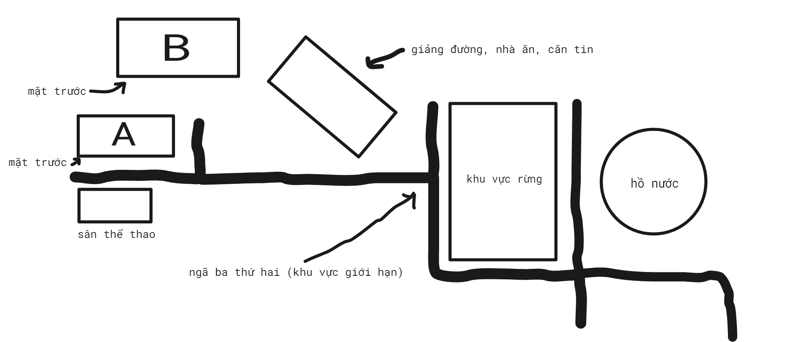
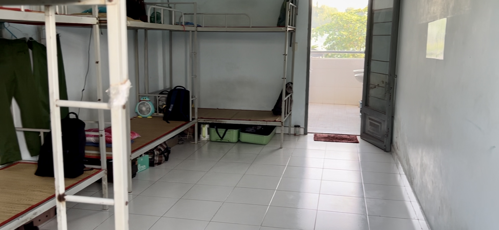
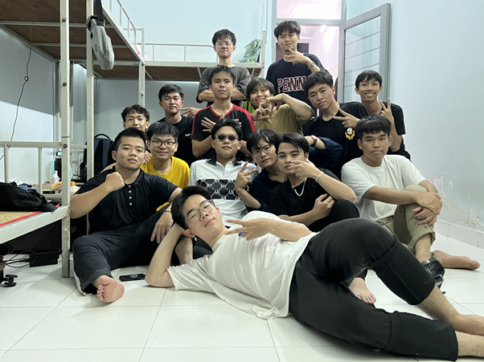

Thời gian học quân sự đợt này khóa tôi không được suôn sẻ cho lắm. Lịch biểu của lớp tôi bao gồm các môn học trên trường và các môn học tại cơ sở 2 Long Bình Tân - đây là cơ sở riêng của trường tôi để phục vụ cho việc học các môn giáo dục quốc phòng - quân sự và giáo dục thể chất 1. Như tôi thì tôi sẽ chỉ nghĩ là (1) học tại cơ sở 2 trước rồi sau đó sẽ học các môn trên trường hoặc (2) học các môn trên trường xong hết rồi sau đó học tại cơ sở 2. Nhưng trớ trêu thay chúng tôi sẽ học ở trên trường gần xong hết các môn, còn lại khoảng vài buổi nữa, sau đó sẽ học quân sự 3 tuần cho đến khi kết thúc kì quân sự thì quay trở lại trường học các buổi còn lại. Điều này thực sự gây khó khăn cho chúng tôi vì những môn học của chúng tôi cần sự thực hành liên tục. Nếu ngắt quãng thì sẽ dẫn đến quên kiến thức, thao tác không được nhanh nhạy. Tôi nghĩ rằng điều này không chỉ riêng gì lớp tôi mà những lớp khác cũng sẽ như thế. Vì để nhớ kiến thức thì bắt buộc phải cần có sự gợi nhớ lại kiến thức đó thường xuyên. Không chỉ chúng tôi rối bù lên với việc phải sắp xếp, phân bổ thời gian ôn lại kiến thức trước và trong kì học quân sự mà cả giảng viên cũng thế. Khi gần tới thời điểm bắt đầu học quân sự, chúng tôi đã báo cho giảng viên về điều này, nhưng giảng viên lại chẳng hề biết sự xuất hiện của các môn quân sự này. Tôi chỉ còn nhớ lại một câu cảm thán với cử chỉ ngán ngẩm của thầy tôi sau khi nghe thông báo là "không hiểu luôn!!!". Với tình cảnh như thế thì tôi cũng chỉ ngậm ngùi tặc lưỡi và cố gắng sắp xếp lịch để thích nghi tốt nhất có thể.
5 giờ 30 phút sáng hôm ngày đi quân sự, tôi đã đặt một chiếc xe 4 chỗ để tới Công viên Tao Đàn - nơi mà chúng tôi sẽ tập trung ở đó. Vừa tới nơi, cảnh tưởng ập ngay vô mắt tôi là rất nhiều xe 4 chỗ cũng như hơn 10 chiếc xe 50 chỗ, xe dùng chở chúng tôi, đậu hàng dài trên con đường Nguyễn Thị Minh Khai giáp Công viên Tao Đàn. Trên vỉa hè, hơn mấy trăm sinh viên mặc đồng phục thể dục đang tập trung ở đó. Cảnh tưởng thật náo loạn làm sao, chẳng có ai để sắp xếp các sinh viên thành các hàng ngũ gọn gàng cả. Những nhóm người đứng tụm lại với nhau hầu hết là những người đã có hẹn với nhau từ trước. Còn những người như tôi, chẳng hẹn trước với ai cả, chỉ biết kéo theo đồ đạc để đi tìm xe của mình. Tôi phải mất khá nhiều nỗ lực băng qua những đám người để tìm xe của tiểu đội tôi. Những chiếc xe không được sắp xếp như suy nghĩ từ trước của tôi, chúng không có thứ tự gì cả. Thật là một điều tồi tệ. Càng lúc thì mọi người cũng càng tới nhiều hơn, không khí ngày một hầm và nóng hừng lên như một chiếc nồi áp suất. Sau một lúc, tôi cũng đã thấy được những người chung tiểu đội tôi và đứng tập trung cùng họ. 15 phút trước giờ xuất phát, chúng tôi nhận được thông báo xếp hàng để điểm danh trước khi lên xe từ những người chỉ huy. Những người chỉ huy này có lẽ là được bên trường hoặc bên khoa phân công từ trước để thực hiện nhiệm vụ điểm danh và đảm bảo rằng không ai bị bỏ lại khi xe xuất phát. Mỗi một người chỉ huy sẽ đảm nhận việc điểm danh cho từng xe. Khi điểm danh đủ số lượng người trên xe thì sẽ cho tất cả lên xe. Giọng người chỉ huy xe tôi dõng dạc hô tên từng người theo danh sách, nhưng giọng của bạn cũng không đủ lớn để lấn át đi giọng nói của hàng trăm con người xung quanh. Giữa cái nóng toát ra từ thân nhiệt của hàng trăm con người đứng san sát nhau, không chỉ chúng tôi vừa cảm thấy khó chịu và vừa phải lắng tai để nghe tên của bản thân, mà những bạn chỉ huy cũng cảm thấy không thoải mãi giống chúng tôi và vừa phải cố gắng kiểm tra số lượng sinh viên. Tôi chợt nghĩ thầm vì sao vấn đề tập trung sinh viên và sắp xếp xe lại không thể tổ chức theo một cách tốt hơn được hay sao. Giá như những chiếc xe chở chúng tôi được sắp xếp theo thứ tự thì có lẽ chúng tôi sẽ dễ xác định được nơi tập trung của chúng tôi hơn. Nhưng vấn đề cốt lõi và quan trọng hơn đó là giải quyết vấn đề sắp xếp số lượng người lên đúng xe của họ và hạn chế sự tập trung một lượng lớn người. Tôi nghĩ rằng cách hiệu quả nhất để giải quyết vấn đề này là người chỉ huy có thể cầm một dụng cụ để mọi người có thể biết rằng người chỉ huy đang phụ trách cho xe nào, một dụng cụ mà tôi nhớ khi tôi còn học cấp 1 lớp trưởng sẽ cầm cái dụng cụ đó, bên trên có viết tên lớp mỗi khi xuống sân để chào cờ hoặc vào những dịp quan trọng mà chúng tôi cần phải tập trung xuống sân xếp hàng. Vấn đề đầu tiên đã được giải quyết và chỉ còn vấn đề thứ hai. Một cách hữu ích để giải quyết vấn đề đó là những người được đọc tên sẽ lần lượt xếp đồ đạc vào khoang hành lý xe rồi lên xe. Người chỉ huy sẽ cần gạch tên những người đã lên xe, sau đó chỉ cần xác định những người chưa tới, và việc xác định này cũng dễ dàng hơn khi mà số lượng người đã được giảm đi bớt. May mắn là xe của tôi đã đủ số lượng người vào đúng giờ xuất phát, nhưng xe của tôi vẫn chưa thể khởi hành vì bị kẹp giữa những chiếc xe khác. Trong xe lúc này nóng như đang trong một phòng xông hơi. Bầu không khí bắt đầu trở nên ngột ngạt. Mồ hôi chảy nhễ nhại trên người tôi. Chúng tôi ngồi chờ cho đến hơn 15 phút sau thì lúc này người tài xế bắt đầu bước lên xe và bật các máy lạnh. Tất cả mọi người ồ lên như vừa tìm được nước nơi sa mạc vậy. Và rồi chiếc xe của tôi cũng bắt đầu di chuyển tới nơi chúng tôi học quân sự.
II. Trong quân sự
Chiếc xe dừng lại ngay trước cổng cơ sở 2 của trường tôi vài phút để bảo vệ xác nhận. Khung cảnh ngay trước mắt tôi là hai con đường rộng và dài thẳng tắp. Hàng cây dừa cao vun vút ngăn cách hai con đường vào ra cùng với hai hàng cây xanh được trồng trên vỉa hè hai bên khiến tôi cứ ngỡ đó là đường vô một khu đô thị. Nhìn chếch rộng sang hai vỉa hè là hình dáng các cô chú thuộc bên bộ phận chăm sóc cây xanh đang cắt tỉa những đám cỏ non. Sau khi đã xác nhận xong, xe chúng tôi bắt đầu tiếp tục di chuyển thêm hơn 500m nữa. Nhìn từ khung cửa sổ của xe, cảnh vật bên ngoài thật thơ mộng, những cánh rừng xanh bát ngát và có hai hồ nước lớn. Xe chúng tôi đỗ lại ngay tại điểm mà tôi gọi là ngã ba thứ hai. Ngã ba thứ hai này cũng là ranh giới mà chúng tôi không được đi vượt quá điểm giới hạn đó, trừ khi được sự cho phép của chỉ huy. Các xe phía sau cũng lần lượt tới, chúng tôi bắt đầu lấy hành lý và di chuyển vô phía trong khu nội trú. Chúng tôi, những người con trai, sẽ ở khu nhà phía trước là khu A, còn những bạn nữ thì sẽ sống ở khu phía sau, khu B. Lý do là vì đợt này chúng tôi có gần 500 người nhưng số lượng nữ giới nhiều hơn gấp 2 lần nam giới và số lượng phòng khu B nhiều hơn khu A. Mà khu B cũng không đủ phòng để cho các bạn nữ ở nên đành các bạn nữ còn lại sẽ qua tầng 3 khu A. Còn chúng tôi thì vừa đủ tầng 1 và 2. Tôi xách hành lý của mình lên trên tầng 2 và mở cửa phòng ra, mọi thứ thật mới lạ, một cảm giác như tôi đang đi nhận phòng ký túc xá vậy. Phòng có 4 chiếc giường 2 tầng, được xếp thành hình chữ U sát vào tường phía bên trái. Cửa trước của phòng nằm đối diện với cửa sau. Qua cửa sau sẽ là hai phòng tắm, nằm đối diện hai phòng tắm là hai lavabo và gương để vệ sinh cá nhân, tiếp tới đằng sau cuối là khu vực hành lang để phơi đồ và từ đó cũng có thể nhìn sang mặt trước của khu nhà B. Các thành viên còn lại trong tiểu đội tôi cũng vô theo sau tôi. Tiểu đội tôi có 7 người thay vì đủ 8 người như các tiểu đội khác, trong đó có 4 người chung lớp tôi, nhưng 1 người trong số đó đã thôi học kể từ học kỳ này, còn 3 người còn lại là khác lớp. Tuy có 3 người chung lớp, nhưng tôi chỉ nói chuyện nhiều với 1 người là Chấn Đạt. Vì lẽ đó mà chúng tôi gần như xa lạ với nhau. Chúng tôi bắt đầu lựa chọn giường cho bản thân mỗi người và sau đó là đồ quân phục. Sau đó chúng tôi dỡ hành lý ra, sắp xếp, ổn định lại đồ đạc và tự giác lau dọn lại phòng. Chúng tôi chỉ biết xưng hô ông-tôi với nhau với một thái độ khép nép e dè nhất có thể. Điều này khiến tôi cảm thấy lúng túng, không biết nên làm sao cả vì tôi là tiểu đội trưởng nên tôi sẽ phải là người gắn kết mọi người lại với nhau. Chờ mọi người dọn dẹp xong, tôi bắt đầu tiến ra phía giữa căn phòng và tập trung mọi người lại. Tôi nói về việc làm quen với môi trường mới ở đây, nâng cao tính đoàn kết trong tiểu đội, không được để các vấn đề xích mích cá nhân ảnh hưởng tới cả tiểu đội, đưa ra các quy định để mọi người tuân theo, và cuối cùng là giới thiệu bản thân mỗi người với nhau. Mọi người dường như rất nghiêm túc và tập trung hoàn toàn vào tôi. Tôi biết rằng tôi đang làm việc có hiệu quả và chính tôi cũng không nghĩ rằng điều đó sẽ xảy ra.

Tới tầm 10h trưa, chúng tôi được lệnh xuống sân khu B tập trung để thầy chỉ huy nói vài lời đầu tiên khi sống tại môi trường mới và sau đó cho chúng tôi đi ăn trưa. Khu nhà ăn là một tòa nhà lớn 2 tầng, tầng dưới là nhà ăn và căn tin, còn tầng trên là khu giảng đường mà chúng tôi sẽ học trên đó và sinh hoạt khi trời mưa. Ăn xong chúng tôi bắt đầu về phòng nghỉ trưa để 13h chiều sẽ bắt đầu buổi học đầu tiên. Chiều đến 16h, chúng tôi bắt đầu được lệnh tập trung sinh hoạt toàn đơn vị với mục đích là để các thầy quản lý, phụ trách các công việc chính ở đây giới thiệu cho chúng tôi về những điều chúng tôi cần biết như các vấn đề về quản lý sinh viên, giờ giấc học tập, cơ sở vật chất,...4 ngày đầu tiên có lẽ là những ngày cực nhất đối với chúng tôi, ai càng mang nhiều trọng trách thì công việc cũng nhiều tương ứng. Thầy chỉ huy chính, thầy Quý, sẽ dồn nhiều nỗ lực vào những ngày đầu tiên này để huấn luyện cho chúng tôi đi vào khuôn mẫu, nề nếp của quân đội, đồng thời chọn ra những người trong ban thi đua, ban kiểm tra nhà ăn, và giáo dục tư tưởng cho chúng tôi về nhiệm vụ của mình, nhất là những người đảm nhận nhiệm vụ quản lý. Thầy luôn nói với chúng tôi rằng những người tiểu đội trưởng là những người quan trọng nhất, vì nếu tiểu đội trưởng làm tốt thì tiểu đội mới tốt, mà tiểu đội đã tốt rồi thì ban thi đua sẽ dễ dàng quản lý và cả đơn vị sẽ đều tốt. Và rồi ngày đầu tiên của chúng tôi đã trôi qua. Có lẽ tất cả chúng tôi đều bắt đầu cảm nhận về môi trường mới này và toàn bộ cơ thể đang ở điểm xuất phát trong quá trình thay đổi để thích ứng.
Mỗi sáng chúng tôi sẽ dậy lúc 5h15 để tập trung xuống sân tập thể dục. Bên khu B, đại đội 2, sẽ di chuyển ra ngoài sân bóng, còn bên đại đội 1 thì sẽ xuống sân trường trước khu B để tập. Bài thể dục chúng tôi tập là bài tập thể dục số 1 của quân đội, gồm có 24 động tác. 5h15 là giờ chuẩn khi chúng tôi đã vô nề nếp, tác phong nhanh chóng mỗi khi nghe lệnh. Những ngày đầu, do chúng tôi đi từ tốn xuống sân, thầy phụ trách ban đêm, thầy Tuấn, đã phạt chúng tôi bằng cách báo thức sớm hơn 15p vào ngày kế tiếp, là 5h, nếu tác phong của chúng tôi vẫn chưa tốt, thì thầy sẽ lại lùi thêm thời gian báo thức. Sau khi tập thể dục xong, lúc này đại đội trưởng và đại đội phó sẽ phân công cho các tiểu đội đi quét sân, mỗi ngày sẽ là 2 tiểu đội. 6h chúng tôi bắt đầu xuống sân để tập trung xếp hàng đi ăn sáng. Bữa sáng của chúng tôi sẽ là các món nước như phở, bún bò, hủ tiếu, nui,...Sở dĩ bữa sáng đều là các món nước một phần do hợp đồng của bên nhà trường và bên dịch vụ nhà ăn. Hầu hết chúng tôi đều không thích bữa ăn sáng lắm vì hương vị của bữa sáng khá tệ. Tuần đầu tiên thì vị của các bữa sáng đều quá ngọt so với khẩu vị của người bình thường. Sau đó chúng tôi cũng đã phản ánh vấn đề này trong các buổi họp của ban thi đua, nhà ăn, đại đội trưởng và tiểu đội trưởng. Vấn đề dường như đã được khắc phục nhưng có lẽ do khẩu vị của các cá nhân thì vô cùng đa dạng, do đó cũng không thể khắc phục triệt để được. Ngoài việc ăn các món ăn sáng được lên thực đơn sẵn thì chúng tôi cũng có thể đăng kí món ăn sáng thay thế. Các món thay thế sẽ là sữa hoặc cháo hoặc mì gói. Trải nghiệm mỗi lần ăn sáng của tôi đều không mấy thoải mãi cho lắm. Nhà ăn chỉ có khoảng 5 chiếc quạt to công nghiệp và các quạt trần để làm mát cho toàn bộ gần 500 người, kèm với việc đồ ăn sáng là món nước thì tôi như vừa mới bước ra khỏi phòng xông hơi mỗi khi ăn sáng. Sau giờ ăn sáng là giờ nghỉ ngơi ngắn của chúng tôi trước khi chuẩn bị xuống sân sinh hoạt đều đặn vào 6h40 mỗi ngày. Chủ đề sinh hoạt của chúng tôi thường sẽ là những vấn đề phát sinh, giải quyết những thắc mắc của tất cả mọi người trong đơn vị. Nếu không có vấn đề gì thì cả đơn vị sẽ cùng vỗ tay để chào đón ngày mới và bắt đầu công việc học tập. Những bạn ban thi đua, nhà ăn, đại đội trưởng và tiểu đội trưởng thì sẽ họp vào lúc khoảng 16h đến 16h30 chiều mỗi ngày nếu như có vấn đề cần thiết, nếu không thì thầy sẽ cho chúng tôi vui chơi. Lịch biểu học của chúng tôi sẽ là 7h-10h30 cho buổi sáng, buổi chiều sẽ là 13h-16h30 và chúng tôi sẽ học từ thứ Hai đến Chủ Nhật. Riêng hai ngày thứ Bảy và Chủ Nhật thì thời gian học buổi chiều sẽ kết thúc sớm hơn 30 phút nhằm tạo điều kiện cho chúng tôi vui chơi giải trí. Lịch biểu này sẽ bao gồm cả việc học giáo dục Quốc phòng & An ninh và bộ môn giáo dục Thể chất 1 của trường tôi. Với thể chất 1 thì chúng tôi sẽ học vào buổi sáng hoặc chiều các ngày thứ Ba, thứ Năm, thứ Bảy và Chủ Nhật. Việc học chung hai môn thế này khiến cho chúng tôi phải hoạt động liên tục, mọi thứ dường như luôn ở trạng thái gấp rút nhất có thể. Chúng tôi học tổng cộng 4 học phần cho bộ môn giáo dục Quốc phòng & An ninh. Hai học phần đầu sẽ chỉ học lý thuyết và giảng viên sẽ cho chúng tôi làm bài thuyết trình trên lớp, hai học phần còn lại chúng tôi vừa học cả lý thuyết và thực hành. May mắn là học phần 1, học phần có khối lượng kiến thức nhiều nhất, chúng tôi chỉ học 2 buổi trên khu giảng đường, còn những buổi còn lại chúng tôi tự học trên LMS - hệ thống quản lý học tập trực tuyến của trường tôi. Những đợt quân sự trước đó, khi mà chưa có những buổi tự học trên LMS, thì sinh viên sẽ phải học tiếp vào buổi tối để kịp hoàn thành tiến độ. Sinh viên trường tôi sẽ phải học hai bộ môn thể chất là thể chất 1 và thể chất 2. Thể chất 2 chúng tôi sẽ học các môn thể thao như bóng rổ, cầu lông, bơi lội,.... Còn thể chất 1 sẽ học chung với bộ môn Quốc phòng & An ninh, chúng tôi được học cách biên soạn một bài thể dục nhịp điệu trên nền nhạc dưới sự hướng dẫn của giảng viên. Mặc dù học quân sự là chính, nhưng nghịch lý là chúng tôi lại dành nhiều nỗ lực cho môn thể chất, những nỗ lực ấy còn được biểu hiện bằng những chấn thương khi tập luyện bài thể dục. Buổi học thể chất đầu tiên, giảng viên dạy chúng tôi, thầy Sơn, đã phổ biến cho chúng tôi những thứ chúng tôi cần biết để hoàn thành bộ môn này. Nhiệm vụ của chúng tôi là biên soạn một bài thể dục nhịp điệu gồm có 7 động tác thể dục và động tác vũ đạo trên nền nhạc từ 2 phút đến 2 phút 30 giây. Chúng tôi phải hoàn thành trong vòng 1 tuần. Để giúp cho kỳ quân sự thêm nhiều kỷ niệm đáng nhớ, cô Loan và cô Hằng, cả hai cô đều là giảng viên môn thể chất, đã tổ chức cuộc thi giữa tất cả các nhóm thể chất để tìm ra 6 nhóm xuất sắc nhất trên tổng số 24 nhóm để trình diễn vào đêm gala cuối cùng của kỳ quân sự. Ban giám khảo của cuộc thi này là các bạn sinh viên. Chúng tôi ngoài việc trình diễn bài thể dục của nhóm mình cho giảng viên để chấm điểm học tập, thì còn trình diễn vào ngày thi giữa các nhóm. Có những nhóm đã phải tập ngày tập đêm, trời nắng cũng cố gắng tập để hy vọng có thể đoạt giải và trình diễn vào đêm gala. Các tiêu chí cần đảm bảo cho một bài trình diễn tốt là cấu trúc (động tác, đội hình, tư thế), kỹ thuật (cường độ, biên độ, vũ đạo, độ khó, đều), phong cách (trang phục, tinh thần, tác phong) và nhạc (bài nhạc, xử lý, thời gian). Tiêu chí để chấm điểm đã rõ ràng như thế, nhưng điểm số vẫn gây nên sự bất đồng giữa nhiều nhóm. Mỗi nhóm sẽ có một nhóm trưởng được chọn ra trong hôm đầu tiên học thể chất, các nhóm trưởng này cũng là ban giám khảo cuộc thi. Những bạn ban giám khảo này đều được họp và được cô Loan, cô Hằng phân chia phần chấm của mỗi người cũng như giải thích cách thức chấm. Chúng tôi, những người trưởng nhóm, chỉ được tập huấn một lần về cách thức chấm điểm, và trong buổi hôm đó thì hai cô cũng nói khá rõ, thời gian họp cũng nhanh nên chúng tôi cũng cảm thấy mọi thứ ổn. Tuy nhiên lại có khá nhiều vấn đề nảy sinh sau đó. Thầy Sơn yêu cầu các động tác thể dục của chúng tôi phải theo thứ tự như trên lý thuyết là tay vai - tay ngực - lườn - lưng bụng - vặn người - chân - toàn thân. Một vài lớp khác thì giảng viên lại không yêu cầu như thế. Tôi đã tập hợp các bạn trưởng nhóm khác để làm rõ vấn đề này và hỏi cô Hằng, cô Loan. Hai cô cũng đồng quan điểm với thầy Sơn. Tuy nhiên thì trong tiêu chí chấm thi lại không có chỗ nào để chấm thứ tự các động tác và thực tế thì khi nhóm tôi trình diễn cho thầy Sơn thì thầy lại chẳng hề đả động gì tới vấn đề thứ tự các động tác cả mặc dù nhóm tôi biên soạn các động tác không theo thứ tự. Tôi cảm thấy thắc mắc là vì sao các thầy cô lại làm như thế, nếu đã muốn sinh viên buộc phải duy trì thứ tự các động tác vậy thì tại sao không làm triệt để điều đó mà lại có sự mâu thuẫn như vậy. Trước ngày thi kết thúc để tìm ra những nhóm xuất sắc nhất thì chúng tôi đã có một buổi tổng duyệt. Mục đích là để chúng tôi chấm thử cũng như để các nhóm nhận thấy những thiếu sót nhằm khắc phục cho ngày thi chính thức. Chúng tôi chỉ có khoảng 30 giây để đưa ra điểm số cũng như nhận xét phần trình bày của các nhóm. Lúc này vấn đề mới lộ diện rõ ràng hơn. Đầu tiên chính là vấn đề thời gian để chấm thi, với thời gian ngắn như thế thì tôi không nghĩ rằng số điểm được đưa ra là khách quan nhất có thể vì ngay cả chính tôi lúc chấm cũng không thể quan sát toàn bộ được. Tiếp đến là các động tác thể dục lúc này đan xen với vũ đạo, nên việc tập trung quan sát, tách biệt nó ra để chấm điểm cũng khá khó nhằn. Sau buổi duyệt thử, điểm số của nhóm tôi đã bị chấm sai lệch khá nhiều. Nhận thấy vấn đề như thế, tôi đã nói với hai cô và đề xuất nên cho thêm một lần chấm nữa dựa trên video mà các nhóm đã quay lại. Bởi vì thời điểm chúng tôi học cũng là thời điểm mùa mưa, nên hai cô đã yêu cầu các nhóm quay video để phòng trường hợp khi trời mưa thì sẽ sử dụng video đó để chấm điểm. Hai cô chỉ nói với tôi rằng hai cô sẽ yêu cầu ban giám khảo chấm đúng hơn. Tôi cũng không biết nói gì hơn cả. Tôi không biết chính xác sự hời hợt và thiếu chuyên nghiệp này đến từ đâu, nhưng rõ ràng là việc này đã tạo nên một trải nghiệm không tốt cho cả chúng tôi, những người ban giám khảo, và toàn bộ những bạn sinh viên. Mặc dù 6 nhóm đạt giải sẽ được biểu diễn vào đêm gala, thế nhưng đêm đó chỉ có nhóm giải nhất biểu diễn. Những nhóm khác chỉ nhắn thông báo về việc không tham dự đêm gala vào nhóm của ban giám khảo, một vài nhóm thì tôi không thấy nhắn gì cả. Tôi thấy rằng chúng tôi đã đổ dồn quá nhiều nỗ lực cho việc học thể chất so với những gì bộ môn này đem lại cho chúng tôi. Có nhiều đã bị chấn thương do tập luyện thể dục, nặng nhất có lẽ là một bạn nữ ở tiểu đội nào đó đã đập toàn bộ bề mặt xuống sàn bê tông và bị trầy sát rất nhiều.
Nhóm nhảy thể chất của tôi chụp hình sau ngày thi kết thúc
Quay lại với môn giáo dục Quốc phòng & An ninh, ngoài học phần 2 ra thì các học phần còn lại trung đội tôi được thầy Quý giảng dạy. Thầy Quý là chỉ huy trưởng quản lý toàn bộ sinh viên chúng tôi khi học tập tại đây. Ban đêm thì sẽ có thầy khác thay thế thầy Quý để quản lý tạm thời chúng tôi. Vì thầy vừa phải giảng dạy và đồng thời kiêm việc xử lý các hoạt động trong đây nên thầy khá bận rộn, thầy lên đứng lớp với chúng tôi được chốc lát là thầy lại đi đâu đó để giải quyết công việc. Tuy có bận rộn như thế nhưng thầy dạy rất chi tiết và chuẩn chỉnh. Không chỉ dạy kiến thức cho chúng tôi mà thầy cũng hay kể cho chúng tôi nghe những câu chuyện mà thầy nói là những câu chuyện này thầy chỉ kể cho lớp chứ không kể cho toàn đơn vị. Buổi đó chúng tôi học thao trường, do hôm trước vừa mới mưa lớn nên có vài bạn mặc đồ thể dục. Khi thầy hỏi đồ quân phục đâu thì các bạn ấy trả lời là do hôm qua trời mưa nên đồ chưa kịp khô. Thầy mới liền kể cho chúng tôi nghe câu chuyện khi thầy còn trong quân đội. Khi thầy còn ở trong lục quân, có lần thầy xin chỉ huy phép ra ngoài và được sự cho phép. Khi về lúc này trời đổ mưa to và thầy sợ mưa khiến bị bệnh nên đã trú mưa. Khi về tới đơn vị thì lúc này đồng hồ đã điểm quá 5 phút và thầy bị chỉ huy bắt viết bản tường trình sự việc và sinh hoạt tiểu đội để làm rõ nguyên nhân. Thầy đưa ra nguyên nhân là do trời mưa, sợ bị ốm nên đã trú mưa. Nhưng chỉ huy vẫn không đồng ý với nguyên nhân đó, người chỉ huy biết là do trời mưa, nhưng phải làm rõ nguyên nhân tại sao về trễ. Thầy vẫn không biết giải thích như thế nào và thế là phải sinh hoạt tiểu đội và lần sau thầy sẽ không được phép ra ngoài nữa. Thầy kết thúc câu chuyện và nhấn mạnh với chúng tôi rằng là phải luôn ghi nhớ điều này, đó là "người ta chỉ quan tâm kết quả, chứ không cần lý do", và dặn dò chúng tôi là nếu chúng tôi vẫn còn giữ tư tưởng lý do này lý do nọ, thì sau này khi đi làm chúng tôi sẽ phải trả giá rất đắt cho điều đó. Người chỉ huy biết là do trời mưa nên thầy tôi về trễ, nhưng không ai quan tâm trời có mưa hay không cả, vấn đề là thầy đã về trễ 5 phút. Thầy cũng tiết lộ cho chúng tôi thầy là giảng viên duy nhất trong đây thuộc biên chế. Thầy bảo có nhiều người nói thầy may mắn, nhưng thực ra là do thầy nỗ lực hơn những người khác. Trong suốt hai năm dịch Covid-19, thầy miệt mài soạn giáo án và bài giảng cho việc học quân sự online trên hệ thống LMS. Và kết quả là thầy đã được đưa vào biên chế. Những giờ học trên lớp sẽ học ở khu giảng đường mới, tầng phía trên của nhà ăn. Tôi được nghe bảo là khu giảng đường này được xây cách đây không lâu. Có lẽ điều này đúng thật, mọi thứ đều rất sạch sẽ và mới. Giảng đường gồm có cỡ 10 phòng học, các văn phòng làm việc của thầy cô, và khu đại sảnh lớn đủ để chứa 500 sinh viên chúng tôi mỗi khi sinh hoạt trên khu giảng đường mới. Tuy nhiên lại có một hạn chế cực lớn đó là khu giảng đường quá nóng. Ở đại sảnh lớn sẽ có các quạt trần, còn phòng học thì sẽ được trang bị 3 máy lạnh và quạt trần. Nhưng tôi vẫn cảm thấy cực kì nóng, không khí hầm và hơi bị choáng, nhức đầu khi học trong phòng vào những lúc trưa chiều nhiệt độ lên đến cao nhất trong ngày. Cái nóng luôn đi theo chúng tôi mỗi ngày khi học tại nơi đây. Ở phòng nội trú, chỉ có 2 chiếc quạt nhỏ tự động xoay được gắn trên trần nhà. Những ai nằm ở giường dưới sẽ không cảm thấy mát được. Ngủ trưa và ngủ tối chúng tôi đều nằm hết xuống sàn và mở hai cửa chính cũng như cửa sổ ra. Ban tối nhiệt độ hạ thấp nên khi nằm xuống sàn chúng tôi cảm thấy rất dễ chịu và mát mẻ, nhưng ban trưa khi ngủ thì đầu và áo tôi luôn thấm đẫm nhiều mồ hôi khi thức dậy. Những buổi tối sinh hoạt chuyên đề trên đại sảnh lớn, đại sảnh lúc này như một phòng xông hơi với nhiệt độ thoát ra từ 500 con người. Kết thúc các buổi học sáng, chiều sẽ là giờ ăn trưa, chiều. Ngoài bữa ăn sáng trị giá 27 ngàn đồng, thì mỗi bữa ăn trưa, chiều trị giá 34 ngàn đồng. Trường tôi sẽ ký hợp đồng với bên dịch vụ nhà ăn về giá tiền, định lượng khẩu phần, các loại thực phẩm,.... Các món ăn rất đa dạng, mỗi bữa sẽ là một thực đơn khác nhau và chất lượng cũng rất tốt. Mỗi bữa ăn các nhân viên nhà ăn sẽ đều đi ngẫu nhiên đến các bàn để hỏi ý kiến chúng tôi về món ăn. Thực đơn các món ăn thì chúng tôi có thể tự lên thực đơn hoặc ăn theo thực đơn mà nhà trường đã xếp sẵn. Những buổi giao ban đầu tiên chúng tôi đã biểu quyết ăn theo thực đơn của nhà trường vì hầu hết chúng tôi đều cảm thấy bữa trưa, chiều của nhà ăn ngon.
Buổi tối sau khi kết thúc bữa ăn chiều, chúng tôi sẽ được tự sinh hoạt tại phòng, hoặc xuống sân để sinh hoạt, hoặc tham gia các buổi sinh hoạt chuyên đề theo kế hoạch của nhà trường. Chúng tôi tham gia tổng cộng 4 buổi sinh hoạt chuyên đề. Buổi đầu tiên là thứ Tư của tuần đầu tiên với chủ đề về Kiểm soát cảm xúc. Đây là buổi sinh hoạt mà tôi thấy mọi người hào hứng, nhiệt huyết nhất. Có lẽ điều này là do phong cách nói chuyện của cô diễn giả giống với lứa tuổi gen Z của chúng tôi. Nội dung cốt lõi của buổi sinh hoạt có thể gói gọn trong việc thái độ, cách nhìn nhận của chúng ta sẽ quyết định cảm xúc của chúng. Tôi không nhớ chi tiết toàn bộ nội dung buổi sinh hoạt, nhưng có lẽ thứ mà tôi nhớ rõ hơn hết là hai thí nghiệm dẫn đến hai triết lý mà chúng tôi được nghe. Thí nghiệm đầu tiên là sự tác động của lời nói đối với sự hình thành tinh thể nước. Cụ thể là người thí nghiệm này đã nói những lời hoặc tích cực hoặc tiêu cực vô trong những hộp chứa nước. Kết quả sau khi đóng băng nước đó lại thì những mẫu thử mà nói lời tích cực thì sẽ cho ra tinh thể nước có hình dạng rất đẹp và ngược lại. Thí nghiệm thứ hai là những nắm cơm, sau đó bỏ vô hộp và đậy kín lại. Mỗi ngày sẽ nói những lời tiêu cực hoặc tích cực vô trong các hộp đó. Kết quả là những hạt cơm sẽ còn nguyên vẹn đối với những hộp nói lời tích cực, và ngược lại. Nghe có vẻ rất ma mị và hấp dẫn. Nhưng nếu là một người được tiếp thu kiến thức khoa học, có thế giới quan tốt thì chắc chắn sẽ có thể phản bác lại những thí nghiệm như vậy. Rõ ràng là những thí nghiệm này đều là ngụy khoa học. Tôi cảm thấy thật khó hiểu vì sao những nội dung như vậy vẫn có thể được duyệt, hoặc có lẽ là chúng cũng chưa hề được kiểm tra chặt chẽ trước khi đến với những người sinh viên như chúng tôi. Buổi thứ hai là thứ Sáu của tuần đầu tiên với chủ đề là tập khiêu vũ với sự hướng dẫn của hai cô giáo từng thi đấu chuyên nghiệp. Chúng tôi được hai cô hướng dẫn nhảy 2 bước cơ bản trong cha cha cha là tiến và lùi. Tôi nghĩ có lẽ hầu hết chúng tôi đều sẽ quên đi những bước nhảy này sau kỳ quân sự. Vì với một buổi học duy nhất ngắn ngủi như thế, chúng tôi sẽ khó có thể cảm thấy sự đẹp đẽ, sức hấp dẫn của bộ môn này được. Và hơn hết chúng cũng không có ý nghĩa mấy đối với chúng tôi. Như thế thì buổi sinh hoạt này cũng chẳng còn ý nghĩa gì cả, ngoại trừ mang lại cho chúng tôi một chút giải trí vào buổi tối. Sau buổi học nhảy, bóng dáng của buổi hôm đó chỉ còn xuất hiện lại qua những lời đùa cợt của chúng tôi với hàm ý ngán ngẩm. Buổi thứ ba là thứ Tư của tuần thứ hai, chủ đề là về kỹ năng giao tiếp. Tôi cảm giác như tôi đã gặp vị diễn giả ở đâu đó rồi vì trông cô rất quen thuộc. Sau khi nghe cô giới thiệu, tôi mới nhận ra là tôi đã từng nhìn thấy hình ảnh của cô trên các bài viết về chủ đề tâm lý được đăng trên các fanpage của trường tôi. Cô cùng với cô Trà là người quản lý văn phòng tham vấn tâm lý của trường tôi. Tôi thì có hay theo dõi các buổi nói chuyện của cô Trà và trong số các buổi nói chuyện đó thì tôi có tham gia một buổi, còn cô Quyên, cô diễn giả nói chuyện với chúng tôi buổi sinh hoạt, thì chưa. Phong cách nói chuyện của cô Quyên khá chuẩn mực theo cách mà tôi thường thấy ở lứa tuổi của cô. Có thể cũng vì thế mà cô không gây được sự chú ý nhiều cho chúng tôi. Các bạn nói chuyện rất inh ỏi, ồn ào. Đáng xấu hổ hơn là cô phải nhắc lại câu hỏi của cô nhiều lần cho những bạn được cô mời trả lời câu hỏi trong bài thuyết trình của cô. Sự không vui của cô được thể hiện rõ qua cao độ giọng nói của cô. Tôi lại cảm thấy khá thích buổi nói chuyện này của cô, nó mang tính chất chia sẻ kiến thức nhiều hơn cho chúng tôi. Buổi thứ tư là thứ Năm của tuần thứ hai, với sự có mặt của sư đoàn 309, chủ đề xoay quanh các kiến thức về Chủ tịch Hồ Chí Minh trước ngày kỷ niệm 134 năm ngày sinh của vị. Chúng tôi khởi động với trò chơi khá hấp dẫn là trò chơi chẵn lẻ. Khi người dẫn chương trình nói một con số là chẵn thì chúng tôi sẽ vỗ tay một cái, và sẽ không vỗ khi số đó là số lẻ. Những người bị phạm lỗi sẽ được gọi lên sân khấu và sau đó những người này sẽ tự bắt nhóm chung với nhau để nhảy theo điệu nhạc mà ban tổ chức phát. Kết thúc phần khởi động sẽ là nội dung chính của buổi sinh hoạt. Chúng tôi được trở về quá khứ để nhìn lại cuộc đời của Bác Hồ trước ngày kỷ niệm 134 năm ngày sinh của Bác.
Sau giờ sinh hoạt chúng tôi sẽ vệ sinh cá nhân lúc 21h và sẽ phải tắt hết đèn để đi ngủ lúc 21h30. Chúng tôi vẫn có thể đăng kí học thêm sau 21h30, nhưng chỉ được phép học tới 22h30. Tôi thấy việc học thêm cũng không giúp nhiều gì cho chúng tôi. Vì 21h30 ngủ thì chúng tôi sẽ chỉ ngủ được 7 tiếng 30 phút nếu như chúng tôi dậy vào lúc 5 giờ và dành 15 phút vệ sinh cá nhân trước khi xuống sân để tập thể dục lúc 5h15. Như thế nếu chúng tôi học thêm 1 tiếng thì đồng nghĩa với việc giấc ngủ của chúng tôi cũng bị giảm bớt đi 1 tiếng và chỉ còn 6 tiếng 30 phút. Tôi không nghĩ rằng chúng tôi đều có thể ở trạng thái tinh thần tỉnh táo để có thể học buổi sáng và buổi chiều với thời lượng giấc ngủ như thế. Tiểu đội tôi chỉ có vài người dành 1-2 ngày để học thêm, còn lại chúng tôi đều lên giường vào đúng 21h30 và trò chuyện với nhau một chút trước khi vô giấc ngủ.
Trước khi học quân sự, tôi đã đọc qua nhiều bài viết review về kỳ quân sự. Hấp dẫn hơn hết có lẽ là những câu chuyện tâm linh về thế giới bên kia. Nhưng thực tế thì những câu chuyện tâm linh này chẳng hề tồn tại, mà thay vào đó những vấn đề gây cho các thầy ấn tượng không tốt về chúng tôi. Tuần đầu tiên, trung đội của tôi có một bạn gặp vấn đề về đường ruột nên đã ho ra máu và được nhập viện ngay hôm sau đó. Sau vài ngày, trùng hợp một vài người trong chúng tôi bị đau bụng. Từ việc không có gì, câu chuyện bí ẩn bắt đầu lan truyền trong khu B về việc có một bạn nào đó có khả năng bỏ bùa và đã bỏ bùa bạn bị ho ra máu và những bạn bị đau bụng. Câu chuyện lan truyền mạnh mẽ đến mức một phụ huynh của một trong số những bạn đó đã trực tiếp đến cơ sở để gặp thầy. Buổi sáng sinh hoạt hôm sau, thầy Quý đã mượn một câu chuyện khi thầy còn ở trên vùng núi và bị doạ bởi những câu chuyện về bùa chú. Thầy đã rất tức giận về việc này. Đêm qua thầy mất ngủ vì nằm suy nghĩ về vấn đề này, thầy cảm thấy vừa buồn mà vừa buồn cười. Buồn vì một thế hệ sinh viên như chúng tôi, một tầng lớp trí thức mà lại có thể tin vào những câu chuyện thế này, buồn cười vì không hiểu sao có thể nghĩ ra được câu chuyện như thế. Chúng tôi luôn muốn biết ai là người đã lan truyền câu chuyện này, ai trong chúng tôi cũng cảm thấy phẫn nộ. Vì điều này sẽ trực tiếp ảnh hưởng đến những bạn đang bị câu chuyện nhắm vào, và còn ảnh hưởng đến suy nghĩ của các thầy dành cho chúng tôi. Ngày thứ Bảy tuần thứ 2, hai nhóm thể chất đã bị mất hai chiếc loa và tổng giá trị lên tới 8 triệu đồng. Ban đầu các bạn chỉ đăng hình ảnh chiếc loa vào nhóm của ban cán sự chúng tôi với giả định là có ai đó cầm nhầm chiếc loa. Nhưng có lẽ các bạn đã đánh giá cao đạo đức của chúng tôi và các bạn cũng không nói cho chúng tôi biết về giá trị cao ngất ngưởng của hai chiếc loa đó. Đầu tuần thứ ba, lúc này có lẽ các bạn đã biết chắc rằng khả năng cao chiếc loa đã bị lấy và các bạn cũng đăng hình kèm theo giá tiền của mỗi chiếc loa vô trong nhóm ban cán sự. Thầy Linh, khi này do thầy Quý có việc bận đột xuất nên đã nhờ thầy Linh quản lý chúng tôi thay thầy cho tới khi kết thúc, mới tập trung ban cán sự chúng tôi để họp gấp. Tôi vẫn còn nhớ buổi họp hôm đó trời mưa xối xả, các hành lang khu A chúng tôi đều ngập nước. Đó là đợt mưa lớn nhất kể từ hôm đầu tiên. Thầy giao nhiệm vụ cho chúng tôi về để báo lại với các thành viên về vấn đề chiếc loa. Mọi chuyện sẽ kết thúc và việc mất chiếc loa sẽ chỉ coi như bị cầm nhầm nếu như người lấy mang chiếc loa xuống phòng chỉ huy trước tối ngày kế tiếp. Thầy đưa ra phán quyết cuối cùng cho chúng tôi rằng nếu như vẫn chưa có chiếc loa nào xuất hiện sau tối ngày mai, thì lúc này công an sẽ vào cuộc điều tra. Đêm đó phòng tôi đã lôi hết tất cả hành lý đồ đạc ra để tôi kiểm tra từng hành lý mỗi người. Chẳng phải vì chúng tôi không tin tưởng nhau, nhưng là vì đêm đó phòng tôi có rất nhiều người từ tiểu đội xung quanh qua chơi và sau khi mọi người giải tán thì chúng tôi kiểm tra hành lý để đảm bảo rằng chúng tôi có thể bảo vệ nhau nếu như có chuyện gì xảy ra. 21h tối ngày hôm sau, đúng như thường lệ thì chúng tôi sẽ nghe thông báo phát loa vệ sinh cá nhân để chuẩn bị đi ngủ vào lúc 21h30, nhưng đêm nay thông báo phát ra từ loa là thông báo toàn đơn vị xuống sân tập trung. Bầu không khí lúc này yên tĩnh và nghiêm trọng hơn bao giờ hết và tất cả chúng tôi đều biết chuyện gì đang xảy ra. Tất cả các thầy đều tập trung lại. Ban thi đua, đại đội trưởng, đại đội phó và các thành viên của hai nhóm bị mất loa cũng đều tập trung đứng trên sảnh khu B. Thầy trực ca đêm bắt đầu gọi tên từng tiểu đội và phân công cho các thầy, ban thi đua và các bạn trong nhóm bị mất loa đi theo tiểu đội đó lên phòng để kiểm tra phòng. Đêm đó dài hơn bao giờ hết, 22h30 chúng tôi mới có lệnh đi ngủ. Chúng tôi đều tò mò không biết liệu có tìm ra chiếc loa hay không. Kết quả là chiếc loa vẫn chưa thể tìm ra. Chúng tôi đều đưa ra một giả thuyết có khả năng cao nhất là chiếc loa đã bị kẻ lấy tuồn ra ngoài vào hôm Chủ Nhật của tuần thứ 2, vì hôm đó là ngày mà các phụ huynh của chúng tôi vô đây để thăm chúng tôi. Và dù kết cục có thế nào đi nữa thì hình ảnh chúng tôi và cả khoa đều đã mang tiếng xấu.
Bên cạnh những vấn đề phía trên ra thì chúng tôi cũng vi phạm các quy định trong đây khá nhiều và hình phạt cũng rất đa dạng dành cho chúng tôi. Đối với các lỗi vi phạm nhẹ như để giày dép không gọn gàng, không tắt đèn, quạt khi ra khỏi phòng thì chúng tôi sẽ chỉ bị phạt quét sân ban sáng hoặc chiều, hoặc cả hai. Những lỗi nặng hơn thì hình phạt cũng sẽ tương ứng. Có lần một tiểu đội bên khu B vi phạm quy định nghỉ trưa, có vẻ là các bạn ấy không ngủ trưa và làm ồn nhưng vô tình để thầy chỉ huy phát hiện, và thế là buổi trưa hôm ấy các bạn bị phạt quét sân dưới cái nắng cháy da. Một hôm khác, các bạn bên khu tôi xuống sân sinh hoạt trễ, và thế là thầy bắt các bạn ấy phải chạy lên tầng cao nhất rồi chạy xuống 10 lần. Đặc biệt và gây cười nhiều nhất là việc mấy bạn lấy xe đạp của cô lao công rồi để cho cô phải đi tìm nguyên buổi chiều. Lúc đó chúng tôi vừa ăn bữa chiều xong và về phòng tắm rửa. Đang khi tắm thì lúc này chúng tôi nghe loa phát thông báo về việc yêu cầu bạn nào lấy xe của cô lao công đề nghị mang trả lại. Chúng tôi đều cười ồ lên vì không thể nhịn cười. Chỉ vài phút sau, lúc này thầy chỉ huy phát lệnh tập trung toàn đơn vị xuống sân để tìm ra ai là người đã đi xe đạp của cô lao công. Những bạn đi xe của cô lao công bị phạt bằng cách là chạy 50 vòng từ chỗ chiếc xe đạp ai đó cất đến chỗ cô lao công đã ngồi.
Tôi không nghĩ tôi lại có nhiều kỷ niệm với tiểu đội tôi đến thế. Trước kỳ quân sự, ngay khi được thông báo về danh sách chi tiết quân sự, tôi đã cảm thấy khá vui vì 8 người thì hết 5 người là chung lớp với tôi. Tôi vui vì tôi đang ở trong giai đoạn mà tôi cảm thấy khá chán với việc kết bạn với ai khác. Không nhộn nhịp như các nhóm khác, chúng tôi chỉ nhắn với nhau hơn 50 dòng tin nhắn một xíu trước ngày đi quân sự. Chúng tôi không họp bàn mang theo cái gì để xài chung cả và thậm chí hôm tập trung ở Công viên Tao Đàn để đi, chúng tôi cũng không hẹn nhau gì cả, thân ai người ấy lo. Đến giờ tôi vẫn nghĩ nếu như tôi không mang giẻ lau chân thì không biết chúng tôi sẽ lấy gì để lau chân nữa. Chắc là sẽ oẳn tù tì để tìm ra ai là người hi sinh quần áo của mình để làm giẻ lau chân. Trên danh sách thì là 8 người, nhưng lúc đi thì chúng tôi chỉ có 7 người, người vắng là bạn trong lớp tôi và đã nghỉ học. Những bạn trong lớp tôi là Chấn Đạt, Bảo Điền và Duy Đạt. Còn những bạn còn lại là Vân Đồng học xây dựng, Mạnh Đồng và Đức học ngôn ngữ Anh.
Từ trái qua - Vân Đồng, Điền, Mạnh Đồng (sau) và Đức (trước), Chấn Đạt, tôi, Duy Đạt
Chấn Đạt và tôi thân với nhau hơn những người còn lại do tôi và nó có làm chung nhóm triết với nhau trước đó. Chấn Đạt rất dễ cười, mỗi khi chúng tôi tập điều lệnh mà người chỉ huy đứng đối diện Đạt là nó sẽ cười không thôi. Vì thế chúng tôi không cho nó đứng đầu hoặc đứng giữa. Bảo Điền thì tôi để ý nó khá hợp nói chuyện với hai thằng Đồng, đêm ngủ nào 3 đứa nó cũng là người khơi dậy những câu chuyện cho cả tiểu đội cười. Tiếp đến là Duy Đạt, tính tình nó khá dị. Tôi không biết nó có vấn đề về tâm thần hay không nhưng các biểu hiện bên ngoài của nó đều khiến người khác cảm thấy thế. Đến kì quân sự lớp tôi mới bắt đầu hỏi xem có ai biết tài khoản facebook của nó không để thêm vào nhóm. Có vẻ như không ai để ý tới sự tồn tại của nó. Có lần nhóm thể chất của tôi tập nhảy vào buổi tối, trong lúc cả nhóm nghỉ ngơi để bạn biên đạo nghĩ cách dạy chúng tôi nhảy, nó đi ra ngoài chỗ bụi cây và cứ đứng yên ở đó mãi. khi mọi người bắt đầu tập trung lại thì mới phát hiện ra nó đứng ở đó từ nãy đến giờ. Ai cũng đều cảm thấy hơi run sợ. Không một ai dám ra ngoài đó để kêu nó lại cả. Tôi mới đi ra ngoài đó và kêu nó vô trong tập nhảy, lúc này nó cứ vừa đi vừa nhắm mắt, không nói năng gì cả. Tôi liền hỏi nó là nó có ổn không thì nó bảo là ổn, lúc này nó như đang bị mộng du vậy. Rồi nó lại mắt nhắm mắt mở và đi đâu đó lên lầu. Tôi hỏi nó đi đâu thế thì nó bảo là đi lấy nước. Lên lầu một hồi vẫn không thấy nó xuống, cả đám mới hốt hoảng kêu tôi lên phòng kiểm tra. Khi nó xuống rồi thì tôi mới hỏi nó là giờ tập được chưa thì nó bảo rồi, tôi hỏi nó sao nãy giờ đi ra ngoài kia vậy thì nó bảo là để bình tĩnh. Nghe xong câu đó mọi người đều cảm thấy sợ. Thân hình nó khá to bự, nhưng mà nó lại chọn nằm ở giường trên. Mỗi lần đi xuống còn một hai nấc thang là nó cứ nhảy xuống rầm rầm. Chẳng biết phải do việc nhảy xuống như thế không mà nó làm gãy kính của thằng Vân Đồng và phải đền hết 840 ngàn. Tối đến lúc chúng tôi ngủ thì nó cũng ngủ theo, nhưng mà cứ tầm 3h sáng là nó sẽ dậy, mở máy tính lên làm gì đó. Chắc cũng vì thế mà lúc nào nó cũng trông bơ phờ vì thiếu ngủ. Vân Đồng và Chấn Đạt cả hai đều là người Hoa, nhờ hai đứa nó mà tôi biết được một món rất ngon của người Hoa là hủ tiếu sa tế nai. Hình ảnh thằng Vân Đồng luôn gắn liền với câu chuyện đi mua những chiếc móc của tiểu đội tôi. Hôm đó nó được thầy Quý cho phép ra ngoài để đi cắt lại kính mà trước đó bị gãy do thằng Duy Đạt giẫm lên. Trước khi ra ngoài, chúng tôi nhờ vả nó mua đồ cho tiểu đội về dùng. Tiểu đội tôi mang khá nhiều móc treo quần áo nhưng vẫn thiếu, thế là nhân tiện nó ra ngoài nên nhờ mua luôn. Lúc cắt kính xong rồi đi mua đồ thì nó mới nhắn chúng tôi là vô WinMart mua và chúng tôi cũng đồng ý. Lúc nó về thì nó để vô trong phòng rồi đi chơi. Khi chúng tôi học xong, lên phòng và thấy đống móc quần áo, mở ra nhìn hóa đơn thì chúng tôi ngớ ngàng khi thấy giá tiền là 228.000 đồng cho 24 cái móc, tương đương 9500 đồng/cái. Chiếc móc màu vàng, bằng nhựa dẻo nên cầm khá ọp ẹp. Ai nấy đều sốc và chúng tôi nói đùa rằng là giao nhầm cho con nhà giàu đi mua đồ. Chúng tôi không hiểu vì sao nó có thể mua với giá tiền cao như thế. Sau giờ ăn chiều, lúc này mọi người đều lên phòng, nó mới bảo giá có 6500 đồng/cái thôi, để nó giải thích cho. Nó nhìn vô hóa đơn rồi phán một câu rằng "ủa, sao kì vậy, rõ ràng lúc mua cái bảng đề giá có 39000 đồng cho 6 cái móc à...". Chúng tôi chỉ biết cười trừ chứ không biết nói gì hơn. Chúng tôi cũng chẳng trách móc hay gì cả, đơn giản là nó không nghiêm trọng và sau vụ việc này chúng tôi đều học thêm bài học là phải luôn kiểm tra kỹ càng giá nằm trên hóa đơn trước khi thanh toán. Mạnh Đồng chắc là đứa có điều kiện nhất trong chúng tôi. Trong tiểu đội có tôi là không chia sẻ đồ ăn cho mọi người, vì khi đi tôi cũng chẳng đem theo đồ ăn. Tôi và Duy Đạt đều được mọi người chia sẻ đồ ăn mà mọi người mang theo. Tôi cảm thấy khá e ngại với việc này và chỉ biết bù đắp lại cho mọi người bằng việc thực hiện tốt nhất có thể với tư cách là tiểu đội trưởng. Mạnh Đồng mặc dù có điều kiện nhưng nó không hề tỏ vẻ quá nhiều, thậm chí nó còn nhắc chúng tôi là đừng kể cho người khác vì sợ người khác lại đồn thổi về nó. Ngoài việc cho chúng tôi đồ ăn ra thì nó còn cho thêm cả các tiểu đội xung quanh nữa. Cuối cùng là Đức, nó có chiều cao khá khiêm tốn so với các bạn đồng trang lứa. Có lẽ phần nhiều do gen và các yếu tố khác của nó, nhưng bù lại thì nó có thể trạng lực lưỡng. Ngày nào nó cũng trải cái khăn ra sàn rồi hít đất. Cũng chính vì điểm nhấn chiều cao đó của nó mà chúng tôi lại có nhiều câu chuyện gắn liền với nó. Có lần nó đi chung với mấy đứa trong tiểu đội tôi và gặp thầy, thầy mới liền bảo là nó là học sinh cấp 1 sao lại vô trong đây. Mỗi lần kể lại câu chuyện này chúng tôi đều bật cười không nguôi. Trong suốt quá trình học tiểu đội tôi chỉ vi phạm một lần vào ngày gần kết thúc khóa. Hôm đó là thứ Ba của tuần cuối và chúng tôi vừa thi nhảy thể chất giữa các nhóm xong. Tôi rủ tiểu đội tôi cùng thêm vài đứa khác ở các tiểu đội xung quanh đi ra ngoài bờ hồ chụp hình. Để đi ra ngoài bờ hồ thì buộc chúng tôi phải đi ra ngoài đường giới hạn đó là khu vực ngã ba thứ hai. Tôi thuyết phục chúng nó rằng là gần kết thúc khóa rồi nên sẽ không sao đâu, nếu không chụp thì sẽ không còn cơ hội nữa, thầy cũng không có ở phòng chỉ huy và do mọi người đang vui chơi sau giờ thi thể chất nên không ai để ý. Chúng tôi băng xuyên qua khu rừng để đến bờ hồ thay vì đi đường chính để tránh chạm mặt người khác. Khi gần bước ra khỏi khu rừng thì lúc này tôi mới thấy xe của thầy chỉ huy ở đó và thầy đang câu cá cùng với mấy thầy khác dưới hồ. Chúng tôi ngừng lại để suy nghĩ thì lúc này thầy chỉ huy bước lên và phát hiện ra chúng tôi đang đứng trong khu rừng. Thầy liền thổi còi ra hiệu lệnh cho chúng tôi đứng lại. Tôi biết mình không thể làm gì nữa nên đành đầu hàng và tiến lại về phía thầy cùng với 5 đứa khác, 9 đứa còn lại đều chạy một mạch và thầy liên tục nói to là "có nhắm chạy được không, quay lại đây". Và rồi cả đám 15 đứa đứng xếp thành hai hàng để nghe thầy giảng dạy về việc vi phạm quy định trong đây. Thầy vẫn cho chúng tôi chụp hình, thầy bảo đã đi có mục đích rồi thì phải thực hiện được mục đích, nhưng chụp hình xong thì về lao động. Ban đầu thầy kêu chúng tôi rằng nếu trời mưa thì phải đi lau dọn hết hành lang khu A, còn trời nắng thì quét sân và đổ rác cho hai khu, nhưng về sau thầy đã giảm nhẹ cho chúng tôi chỉ cần đi đổ rác cho hai khu.
Chụp với hồ mà tưởng đâu là đi chụp với vỉa hè
Trong suốt quá trình học tập, tiểu đội tôi luôn giữ được sự đoàn kết, không có bất cứ mâu thuẫn nào gây mất tình đồng đội cả. Mọi thứ đều chuyển động theo đúng như những lời nói ban đầu của tôi khi mới vào phòng. Có một lời nói vu vơ mà tôi nhớ mãi đó là trong một lần ban thi đua đi kiểm tra nội vụ thì có một bạn kiểm tra phòng tôi và nói là phòng này gọn gàng thế. Mỗi ngày chúng tôi đều lau phòng 2 lần vào buổi trưa và buổi tối, quét phòng thì có thể hơn. Chấn Đạt nó hay bảo tôi là phòng của tụi mình còn gọn gàng và sạch sẽ hơn mấy phòng khác nhiều đó. Có vẻ điều này đúng thật. Lúc gần kết thúc đợt học tụi tôi có đùa với nhau rằng sau này lên trường gặp đừng quên nhau nhé. Điều này phần nào thể hiện ý muốn rằng chúng tôi đều muốn gắn kết mối quan hệ với nhau thêm nữa chứ không chỉ gói gọn trong kỳ quân sự ngắn ngủi này. Trong quá trình làm tiểu đội trưởng, hầu hết là tôi cảm thấy hài lòng với những gì mình đã làm. Có lẽ điều tôi chưa hoàn thiện được là giúp cho Duy Đạt hòa nhập với mọi người hơn nữa và tạo những cuộc trò chuyện thân mật giữa mọi người.

Phòng tôi vào giờ kiểm tra nội vụ
Ở trong đây chúng tôi gặp nhiều vấn đề tới các vật dụng cá nhân hơn cả. Phòng tôi thì có 2 đứa bị gãy kính và tôi thì bị hư điện thoại. Chiếc điện thoại của tôi đã khiến cho tôi được sự quan tâm của nhiều người hơn cả. Ai cũng biết chuyện chiếc điện thoại tôi bị hư. Điện thoại của tôi bị hư sau đúng 5 ngày ở trong đây. Trước đó 1 ngày là tôi có làm rớt điện thoại do lúc cúi xuống mang giày vô thì điện thoại bỏ ở túi trên ngực tôi bị rớt xuống đất. Sang ngày kế tiếp sau khi ăn bữa chiều xong thì lúc này điện thoại tôi lúc màn hình bị xanh và lúc thì lại bình thường. Một lúc sau thì màn hình đã bị xanh toàn bộ và không thể làm bất cứ thứ gì khác cũng như tắt nguồn. Người tôi nghĩ tới đầu tiên lúc này là Khắc Duy, thằng bạn tôi. Tôi lập tức nhắn tin cho nó và nhờ sự giúp đỡ. Thời điểm này cũng trùng với lúc bạn tôi đang trong kì thi gắt gao và nó cũng chưa kịp ôn nhiều. Dù thế nhưng bạn tôi vẫn cố gắng sắp xếp và đồng ý giúp tôi mang điện thoại đi sửa. Từ chỗ ký túc xá bạn tôi sang khu quân sự của tôi tầm 10km và từ chỗ quân sự tới chỗ sửa chữa điện thoại tầm 13km. Nếu tính toàn bộ quãng đường bạn tôi phải đi từ ký túc xá rồi quay lại ký túc xá thì là tầm 29km. Tôi chọn FastCare để sửa chữa điện thoại vì trước đó tôi có sửa ở đây vài lần. Bên sửa chữa thông báo với chúng tôi về 3 phương án để sửa màn hình, trong đó phương án 3 là thay màn hình mới. Do phương án 1 không thành công, nên bên FastCare đã chuyển điện thoại của tôi xuống chi nhánh quận 10 để thực hiện phương án 2. Hôm điện thoại được chuyển tới chi nhánh quận 10, bên này gọi cho bạn tôi vào tầm 16h chiều và bảo sẽ xong kịp trong chiều tối và báo lại với bạn tôi. Thế nhưng nguyên tối hôm đó, không có một cuộc điện thoại nào cho tới tận 14h chiều ngày hôm sau thì họ gọi điện báo lại rằng không sửa được phương án 2. Điều thú vị là bạn tôi đã kịp gọi cho bên quận 10 trước và biết được một thông tin là điện thoại của tôi đã được sửa xong vào lúc tầm 16h-17h chiều hôm trước và 21h thì chỗ này mới hết giờ làm việc. Hôm đó cũng là Chủ Nhật và sang ngày kế tiếp, tôi quyết định mang điện thoại qua tiệm khác để kiểm tra. Bạn tôi lúc này vẫn còn bù đầu vô trong kiến thức để ôn thi, tôi mới nhờ tới sự trợ giúp của người thứ 2 là Như. Chúng tôi đã không liên lạc gì với nhau hơn 4 tháng và nó đã không trả lời tin nhắn cuối cùng của tôi khi tôi giải bài tập toán trên trường cho nó. Tôi không biết nó quên hay vì lý do nào đó khác, nhưng tôi rất khó chịu đối với những người không trả lời tin nhắn của tôi. Ngoại lệ có lẽ là khi người đó không thể kết nối được Internet hoặc đã mất. Vì thế nên tôi đã quyết định không chủ động nhắn tin cho nó. Trước đó là thế, nhưng giờ thì tôi không còn cách nào khác cả nên cũng đành phải nhắn tin để nhờ nó giúp tôi. Ngoài việc phải học trên trường ra thì Như cũng đi làm thêm bên ngoài nữa và cũng kín lịch vào thời điểm này nên đành nó cũng không thể giúp đỡ tôi ngay liền được mà phải chờ thêm 2 ngày nữa. Tôi biết là điều này không đúng nhưng sau khi đọc xong những dòng tin nhắn đó tôi cảm thấy buồn khá nhiều. Lúc ấy tôi chợt nghĩ giá như tôi có thể tự mình giải quyết vấn đề thì tôi sẽ không bao giờ phải cảm thấy như vậy nữa. Do tôi muốn cần gấp chiếc điện thoại nên đã nhờ thêm người thứ 3 và đó là Huy. Nó học chung lớp với tôi nhưng do nó bị khóa mã số sinh viên vào kỳ này nên nó không thể học chung với tôi được. Tôi với nó không thân thiết nhau lắm do cách nói chuyện và nhắn tin của nó khá cộc lốc. Nó chỉ thường xem tin nhắn của tôi chứ hiếm khi trả lời lại. Trên lớp tôi với nó lúc nào cũng ngồi chung với nhau nên tôi nghĩ có thể nó sẽ giúp tôi được nên đã nhắn tin nhờ nó. Huy nhắn xin lỗi tôi và không thể giúp đỡ tôi được vì "xa quá". Tôi cũng không biết nhắn gì hơn ngoài lời cảm ơn sau khi biết lý do từ chối là vì quãng đường xa. Sau hành trình nhờ sự giúp đỡ tôi thì cuối cùng tôi cũng quay lại với thằng bạn tôi và để cho giúp tôi trọn vẹn. 1 tuần trôi qua kể từ lúc điện thoại bị hỏng thì tôi cũng nhận lại được chiếc điện thoại đã được sửa chữa với sự vui mừng khó thể nào tả. Một trăm lời cảm ơn có lẽ cũng không đủ thể thể hiện sự biết ơn của tôi dành cho nó. Khi nghe tôi kể về việc bạn tôi giúp tôi sửa điện thoại, vài đứa trong đây nói với tôi là sao bạn tôi tốt thế. Tôi thật sự cảm thấy vui khi nghe điều này. Tôi cũng không biết trả ơn nó thế nào ngoài việc tôi sẽ dẫn nó đi ăn món hủ tiếu sa tế nai mà hai đứa phòng tôi giới thiệu.
Ngày thứ Năm cuối cùng, mọi thứ nhẹ nhàng đến lạ, báo hiệu những phút giây cuối cùng đang trôi qua. Những buổi học nắng nóng, những buổi nhảy thể chất đến thấm đẫm mồ hôi, những bước chân nhanh chóng vội vàng bước đi trên sân trường, những giọng nói hô to dõng dạc cử động 1,2,3, những dáng người chạy đi nhặt từng trái lựu đạn, những hình bóng của bộ quân phục màu xanh, mọi thứ đều không còn nữa. Sáng hôm đó, các thầy tổ chức thi lại cho những bạn bị trượt môn ném lựu đạn dưới hình thức thi lý thuyết trên giấy. 9h sáng, loa phát thông báo kêu chúng tôi mang đồ quân phục xuống phòng chỉ huy để nộp lại. Sau khi trả đồ, chúng tôi chẳng còn phải suy nghĩ về điều gì nữa cả, chúng tôi được nghỉ ngơi sau những ngày học tập liên tục. Tôi về phòng rồi qua bên tiểu đội 4 hát hò với mấy đứa bên đó cho tới giờ ăn trưa. Bữa ăn trưa cũng đặc biệt hơn mọi ngày, mỗi bàn được 1 chai nước ngọt lớn và mỗi người được 1 quả chuối. Ăn xong chúng tôi về phòng để ngủ nghỉ trưa theo đúng chế độ. Chưa bao giờ chúng tôi được ngủ trưa lâu đến thế, chúng tôi ngủ tới tận 14h30 chiều. Chiều đến có bạn thì khu vực sân thể thao chơi, có bạn thì ở phòng tận hưởng giây phút thư giãn rồi sắp xếp đồ đạc. Sau giờ ăn chiều, ai nấy cũng đều tất bật tắm rửa, diện những bộ đồ đẹp để tham dự đêm gala. Nhưng với các bạn nữ thì tôi đã thấy các bạn trang điểm lộng lẫy trước giờ ăn chiều. Bạn nào cũng thật xinh xắn và dễ thương. Và rồi đêm gala đã bắt đầu, các tiết mục là nhảy, hát, và nhảy tự do toàn bộ. Tôi ngồi tới khi kết thúc các phần thi đã được đăng kí, còn tới phần cuối cùng, khi này nhạc mở lên và tất cả mọi người đều bung hết sức để quẩy, thì tôi lên phòng và chuẩn bị mọi thứ để phòng tôi và thêm các phòng khác ăn liên hoan.

Ảnh này vẫn còn thiếu nhiều đứa do tụi nó ham chơi